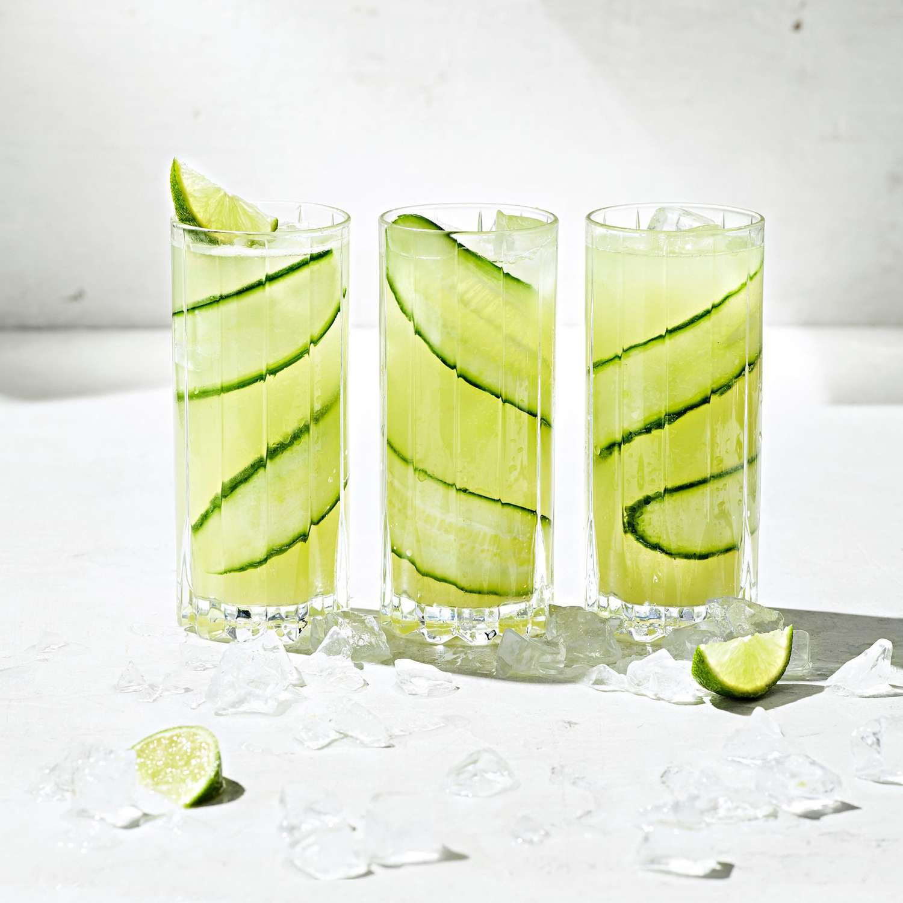

Cucumber Limeade

Agua de pepino is a delicious cucumber agua fresca from Mexico. Serve over ice for a refreshing drink.
Ingredients
- 5 cups water, divided
- 3 medium cucumbers, peeled and chopped
- ½ cup freshly squeezed lime juice
- 4 tablespoons granular sucralose sweetener (such as Splenda®), divided
Instructions
- Blend 2 cups water, cucumbers, lime juice, and 2 tablespoons sweetener together in a blender until smooth.
- Pour into a pitcher; add remaining 3 cups of water. Stir in additional 2 tablespoons of sweetener to taste. Serve over ice.